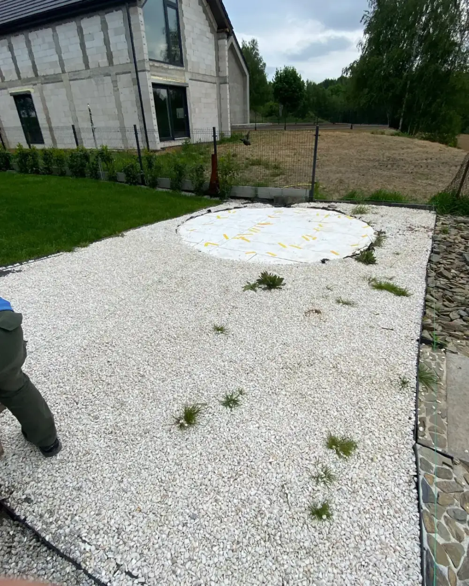
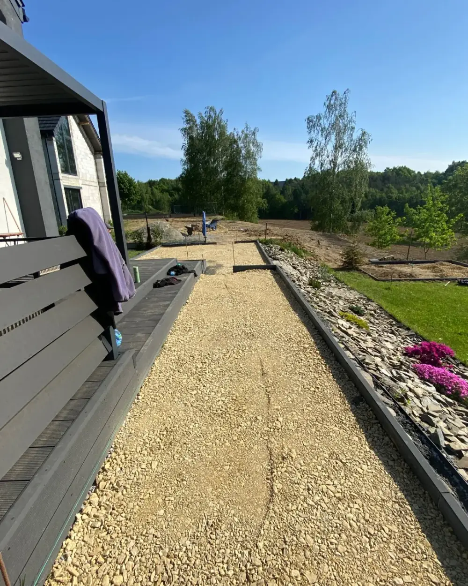
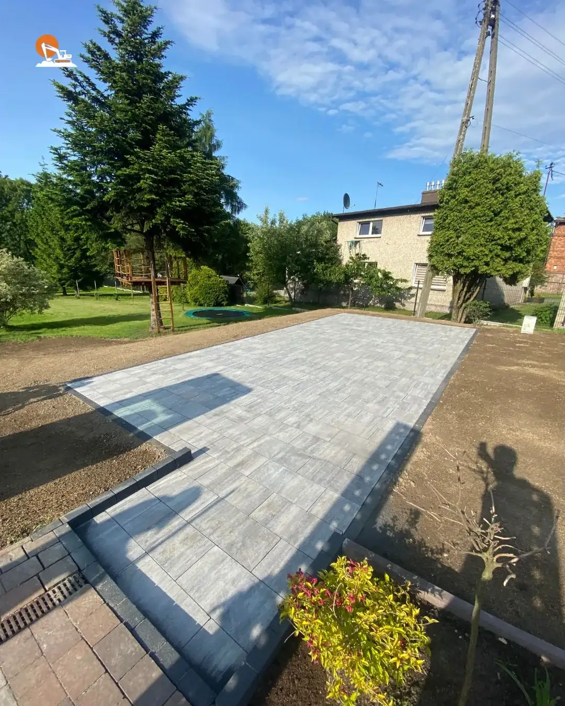
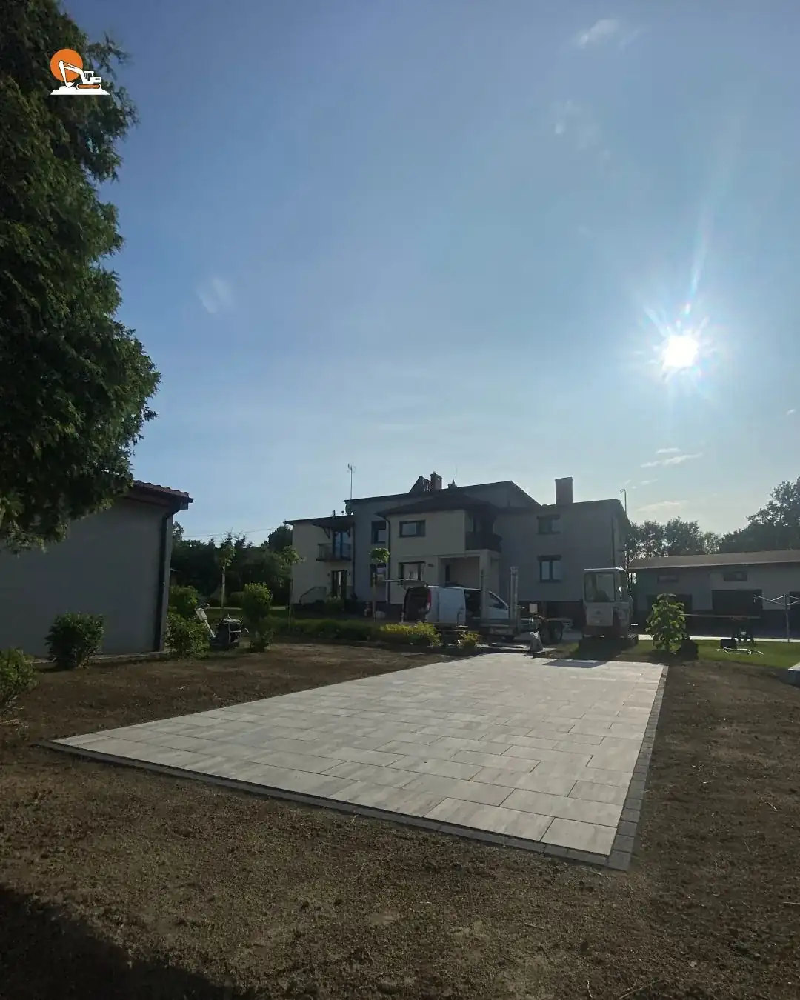
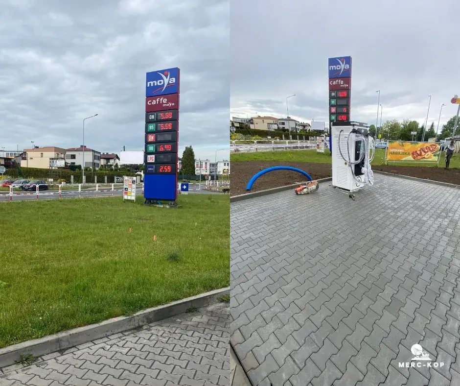
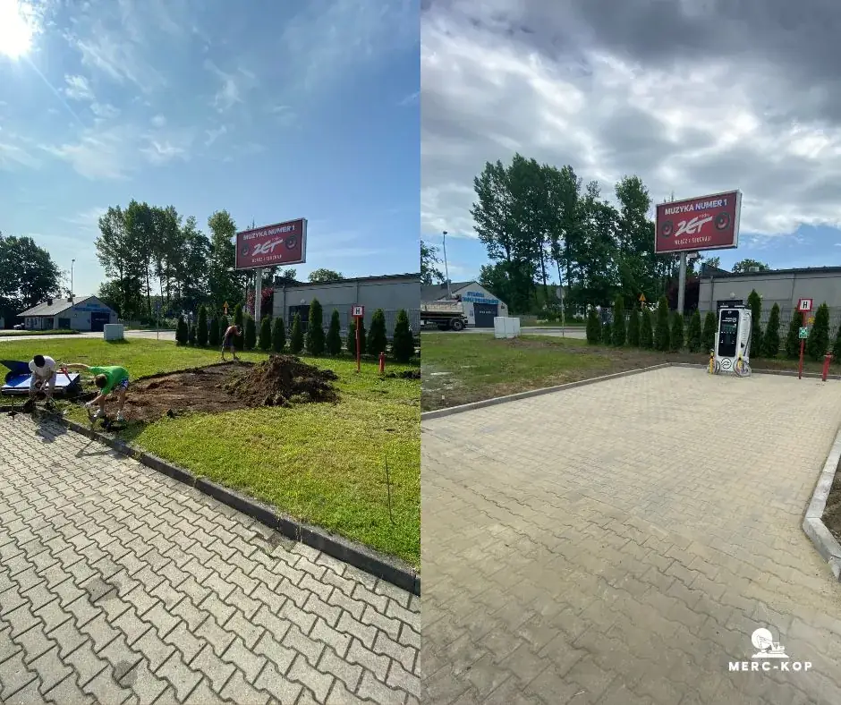
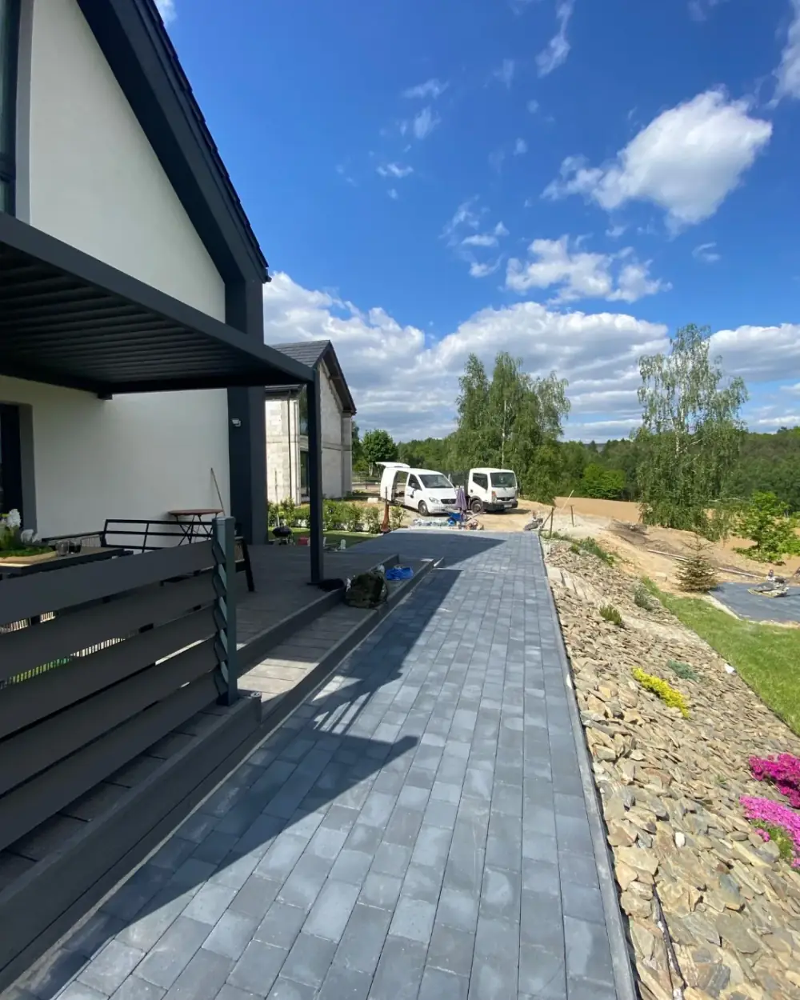
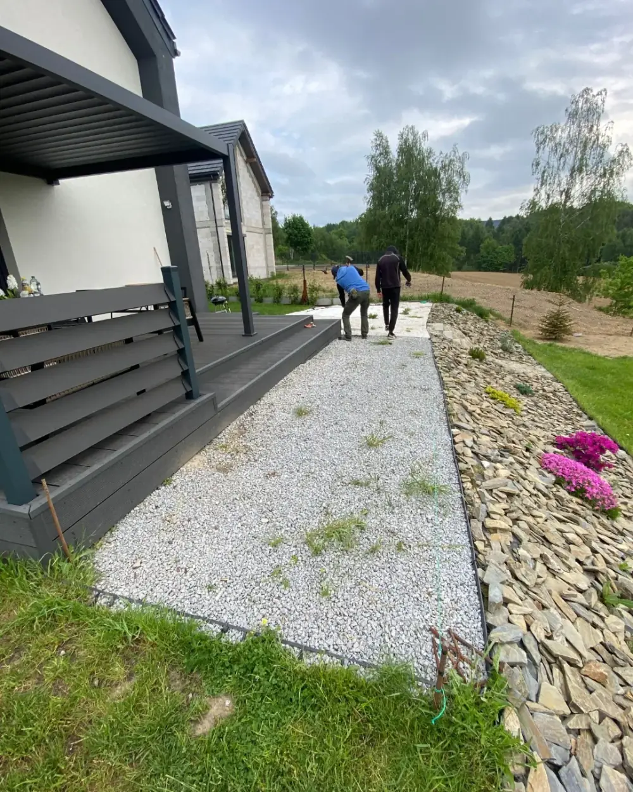

Realizacje
Sprawdz nasze realizacje
Prezentujemy wybrane realizacje robót ziemnych, które wykonaliśmy dla klientów prywatnych i firm. Każdy projekt to gwarancja solidności, terminowości i profesjonalnego sprzętu. Sprawdź, jak przygotowujemy teren pod inwestycje i jak dbamy o jakość wykonania.

Przygotowanie podłoża pod zbiornik na deszczówkę – utwardzenie gruntu, zabezpieczenie geowłókniną i obsypanie kruszywem ozdobnym. Prace wykonane w ogrodzie przy nowo wybudowanym domu jednorodzinnym.
- Żory
- Lipiec 2024
- 2 dni

Budowa ścieżki ogrodowej z kruszywa – wykonanie stabilnego podłoża, montaż obrzeży i zabezpieczenie rabat geowłókniną. Estetyczne i trwałe rozwiązanie, które porządkuje przestrzeń ogrodu.
- Żory
- Sierpień 2024
- 2 dni

Budowa ścieżki ogrodowej z kruszywa – stabilne podłoże, trwałe obrzeża i naturalne wykończenie, które idealnie komponuje się z otoczeniem tarasu i ogrodu.
- Żory
- Sierpień 2024
- 1 dzień

Układanie kostki brukowej – wykonanie podjazdu o dużej wytrzymałości i estetycznym wyglądzie. Solidne przygotowanie gruntu i staranne ułożenie gwarantują trwałość na lata.
- Żory
- Wrzesień 2024
- 3 dni

Wykonanie podjazdu z kostki brukowej – solidne przygotowanie podłoża, precyzyjne ułożenie kostki i estetyczne wykończenie obrzeży. Trwałe rozwiązanie, które zwiększa funkcjonalność i wartość posesji.
- Żory
- Październik 2024
- 4 dni

Utwardzenie terenu przy stacji paliw – wykonanie placu z kostki przemysłowej pod nową infrastrukturę. Prace obejmowały przygotowanie podłoża, zagęszczenie gruntu oraz staranne ułożenie nawierzchni.
- woj. śląskie
- Listopad 2024
- 5 dni

Budowa stanowiska do ładowania samochodów elektrycznych – przygotowanie i utwardzenie terenu kostką betonową. Solidne wykonanie gwarantuje trwałość i bezproblemowe użytkowanie.
- woj. śląskie
- Grudzień 2024
- 3 dni

Układanie kostki brukowej wokół domu – wykonanie chodnika prowadzącego do tarasu i ogrodu, estetyczne wykończenie obrzeży oraz integracja z istniejącą aranżacją ogrodu.
- Żory
- Październik 2024
- 3 dni

Przygotowanie podłoża pod nawierzchnię z kostki brukowej – wysypanie i zagęszczenie grysu jako stabilnej bazy, zabezpieczenie obrzeży i przygotowanie terenu do dalszych prac wykończeniowych.
- Żory
- Wrzesień 2024
- 2 dni